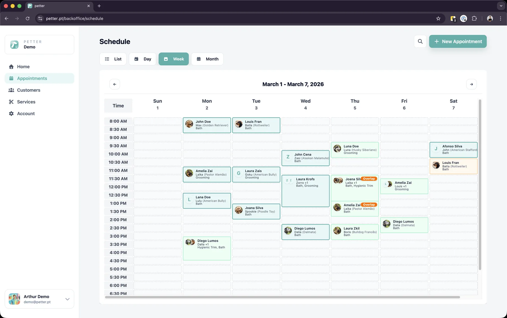
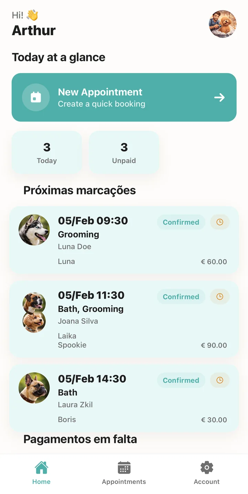

01 · SaaS · Web + iOS
Petter
A SaaS platform for pet-care businesses: scheduling, clients and a marketplace in one place. Full-stack and built end to end, with a Node.js API, a Next.js web app, a native SwiftUI iOS app and Supabase.
- In-app AI assistant that understands a request, picks the right action and asks before it writes anything.
- AI document extraction that turns a PDF or a photo of a price list into a structured service catalogue.


How the assistant handles a request
- MessageThe user asks in plain language
- UnderstandLLM intent classification and entity extraction
- RouteMulti-provider gateway: Claude, Gemini, OpenAI-compatible
- ActA registry of actions that call internal APIs
- ConfirmWrite actions are proposed, the user approves
- RecordAudit log, token and cost tracking